← 生成器 · 已基本认可的二十句基线换十二句，看能否举一反三
每句首轮都真实调用了模型，选句目标未传给模型。首轮 9/12 通过结构检查；证据提示修订后，同批 11/12 通过。规则已针对本批问题修复，这些结果属于同批回归，不是新的独立测试成功率。
白鸟一例仍保留严格场景模式的失败，另列一次数量模式对照；未把它冒充空间关系已经通过。打开本页不会调用模型，带入生成器后需点击生成才会调用。
g01 · 绿树村边合，青山郭外斜。
孟浩然《过故人庄》 · 原句出处 · 带入生成器
检验树群、村落与远山能否形成有承托的田园空间。
首轮问题：村被地点白名单排除，剩下树和山，缺少田园主体。
本轮处理：村落借形为一组低矮房舍；树群分两侧，屋舍和树根共享地表。
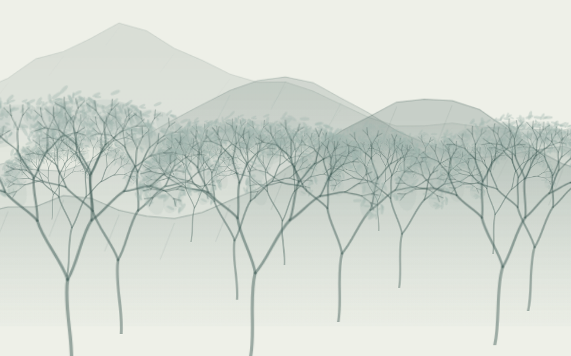
首轮实际结果 当前严格场景模式
当前严格场景模式记录与自动检查
首轮 2026-10-21T15-03-29-717Z-05a4c95e；当前 2026-10-21T15-03-29-717Z-05a4c95e。
{"village":true,"ground":true}
仍未绘制：郭：该专名人物、地名或抽象含义暂不作实景补画
仍需改进：城郭的专用形态仍缺；当前没有用楼冒充城墙，树木环抱感仍可打磨。
审美仍待逐幅确认；首轮失败未被后续结果覆盖。
g02 · 独怜幽草涧边生，上有黄鹂深树鸣。
韦应物《滁州西涧》 · 原句出处 · 带入生成器
检验溪涧、岸草、深树与鸣鸟的上下及栖息区域。
首轮问题：首轮空间证据只引了深树鸣，遗漏黄鹂，整份结果被拦截。
本轮处理：通用证据自检提示后新回答通过；山涧、岸草和深树组成溪岸，鸣鸟安排在树冠区域。
首轮实际结果：未生成画面spatial[1] 依据未关联关系两端
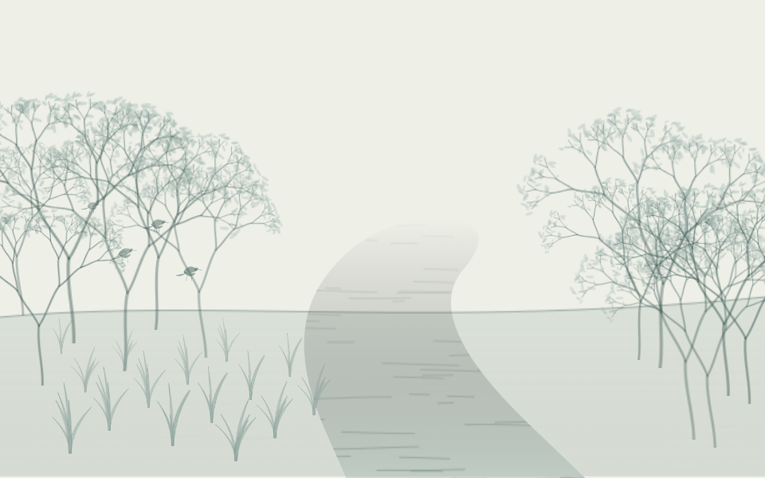
当前严格场景模式记录与自动检查
首轮 2026-10-21T15-03-33-953Z-23339ec0；当前 2026-10-21T15-07-46-383Z-a618c586。
{"water":true,"grass":true,"woodedCreek":true}
仍未绘制：
仍需改进：修订回答没有空间项，鸟的位置来自本地布局；不等于模型已经证明了栖枝关系。
审美仍待逐幅确认；首轮失败未被后续结果覆盖。
g03 · 桃花一簇开无主，可爱深红爱浅红？
杜甫《江畔独步寻花·其五》 · 原句出处 · 带入生成器
检验一簇的群体计数及花树落点；深浅红色仍单独记录为表达缺口。
首轮问题：有花树，却缺少地表落点。
本轮处理：疏花树加地面承托，用一株树承接花簇。
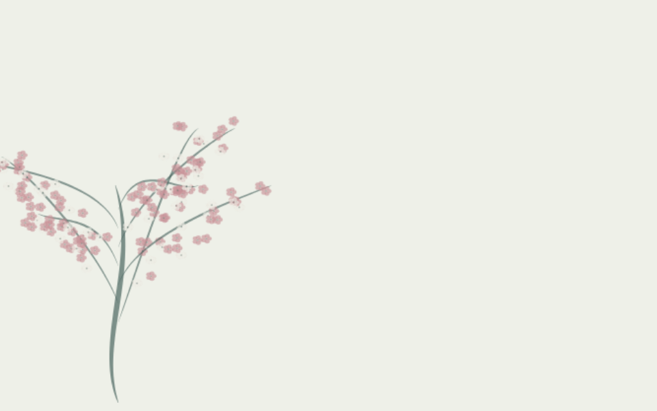
首轮实际结果 当前严格场景模式
当前严格场景模式记录与自动检查
首轮 2026-10-21T15-03-43-967Z-cc45f88b；当前 2026-10-21T15-03-43-967Z-cc45f88b。
{"oneTree":true,"ground":true}
仍未绘制：深红／浅红：该专名人物、地名或抽象含义暂不作实景补画
仍需改进：模型将一簇解释为 few，仍不是精确簇数；深红、浅红的局部色彩尚未自动映射。
审美仍待逐幅确认；首轮失败未被后续结果覆盖。
g04 · 竹深树密虫鸣处，时有微凉不是风。
杨万里《夏夜追凉》 · 原句出处 · 带入生成器
检验混合密林的组织与否定风；缺少虫体时不得改画成鸟。
首轮问题：竹与树各自铺开，缺少混合林地的层次。
本轮处理：安排共同林地、远近树群和较近的竹簇；无风保持，虫鸣没有错画成鸟。
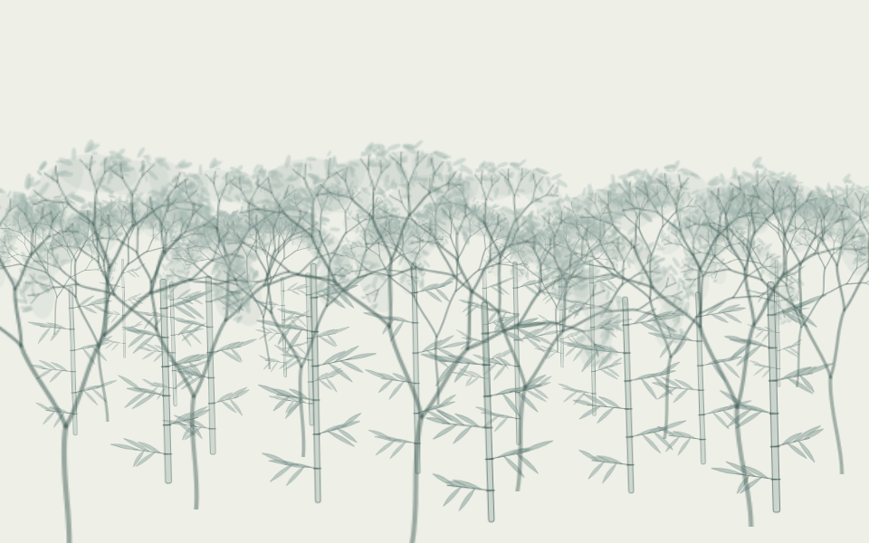
首轮实际结果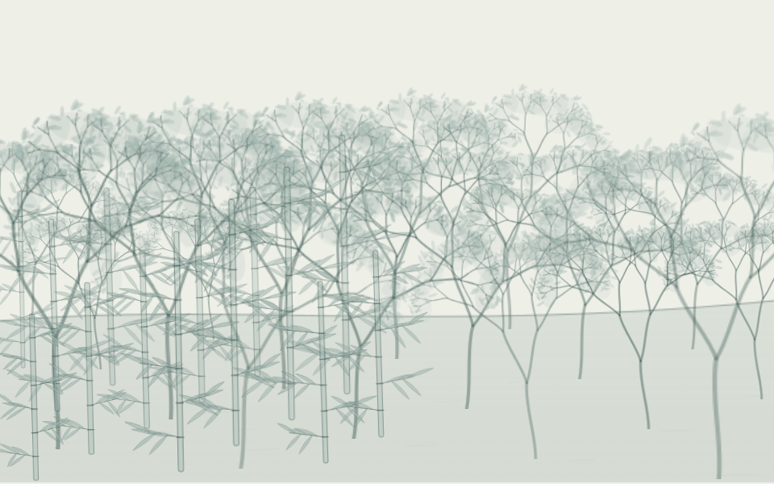
当前严格场景模式记录与自动检查
首轮 2026-10-21T15-03-47-026Z-4c24f744；当前 2026-10-21T15-03-47-026Z-4c24f744。
{"noWind":true,"noBird":true,"woodland":true}
仍未绘制：虫：该意象尚无合适的写意画法；微凉：该专名人物、地名或抽象含义暂不作实景补画；风：原文中缺席，不绘制
仍需改进：虫体、声音和夏夜配色未实现；密林层次与笔触仍可精修。
审美仍待逐幅确认；首轮失败未被后续结果覆盖。
g05 · 两岸青山相对出，孤帆一片日边来。
李白《望天门山》 · 原句出处 · 带入生成器
检验两岸山势、中央通道与孤帆借形；不能按片数复制一群舟。
首轮问题：两岸青山被当作未支持地点，孤帆无借形，画面只剩日光。
本轮处理：两侧山体留出中央水路，孤帆以一舟借形；推断水域单独标记。
首轮实际结果 当前严格场景模式
当前严格场景模式 记录与自动检查
首轮 2026-10-21T15-03-50-858Z-234139dd；当前 2026-10-21T15-03-50-858Z-234139dd。
{"oneBoat":true,"channel":true}
仍未绘制：
仍需改进：帆布尚未画出，当前不是完整帆船；山岸走势和远舟尺度仍需审美确认。
审美仍待逐幅确认；首轮失败未被后续结果覆盖。
g06 · 野水无人渡，孤舟尽日横。
寇准《春日登楼怀归》 · 原句出处 · 带入生成器
检验孤舟与水面，并保留无人这个缺席条件。
首轮问题：野水被修饰词挡住，孤舟没有水面。
本轮处理：普通自然修饰词不再阻断水域映射；一舟留在宽水面上。
首轮实际结果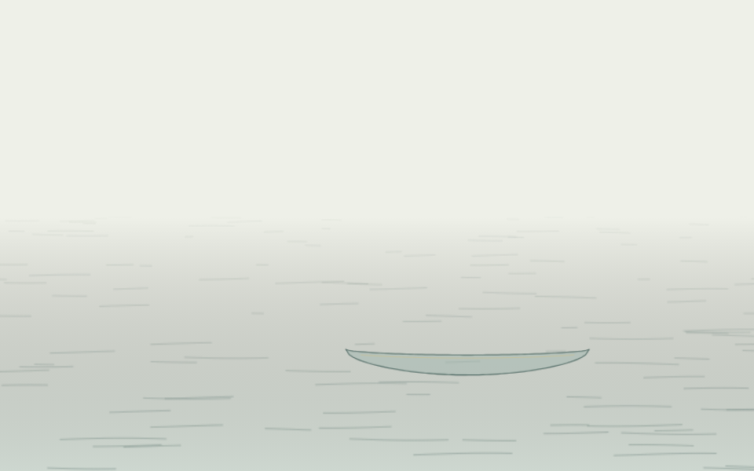
当前严格场景模式 记录与自动检查
首轮 2026-10-21T15-03-58-544Z-61108ad8；当前 2026-10-21T15-03-58-544Z-61108ad8。
{"oneBoat":true,"water":true,"noPerson":true}
仍未绘制：
仍需改进：尽日的持续时间及横舟朝向尚未单独表达；无人保持缺席。
审美仍待逐幅确认；首轮失败未被后续结果覆盖。
g07 · 千山鸟飞绝，万径人踪灭。
柳宗元《江雪》 · 原句出处 · 带入生成器
检验铺展山径与鸟、人缺席；不能从全文自动添孤舟、翁或雪。
首轮问题：千山、万径都被地点白名单排除，语义有效却生成空白。
本轮处理：数量修饰不阻断山、径的匹配；山势与几道路径形成空寂地景。
 首轮实际结果
首轮实际结果 当前严格场景模式
当前严格场景模式记录与自动检查
首轮 2026-10-21T15-04-00-836Z-c83cbb8c；当前 2026-10-21T15-04-00-836Z-c83cbb8c。
{"mountain":true,"noAbsentBodies":true}
仍未绘制：鸟：原文中缺席，不绘制；人踪：原文中缺席，不绘制
仍需改进：千山万径以有限地形笔触概括；没有补全文下联的雪、舟、翁。
审美仍待逐幅确认；首轮失败未被后续结果覆盖。
g08 · 孤村落日残霞，轻烟老树寒鸦。
白朴《天净沙·秋》 · 原句出处 · 带入生成器
检验村落、树群和鸟与夕景的层次；六个意象用于观察协议容量边界。
首轮问题：缺村落和霞，只剩树、烟、鸟、日，地面联系不足。
本轮处理：村落接地，树群分近远，薄色天际借形霞。
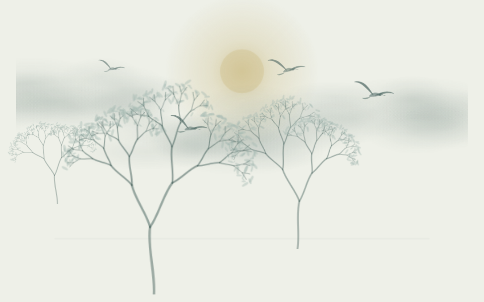
首轮实际结果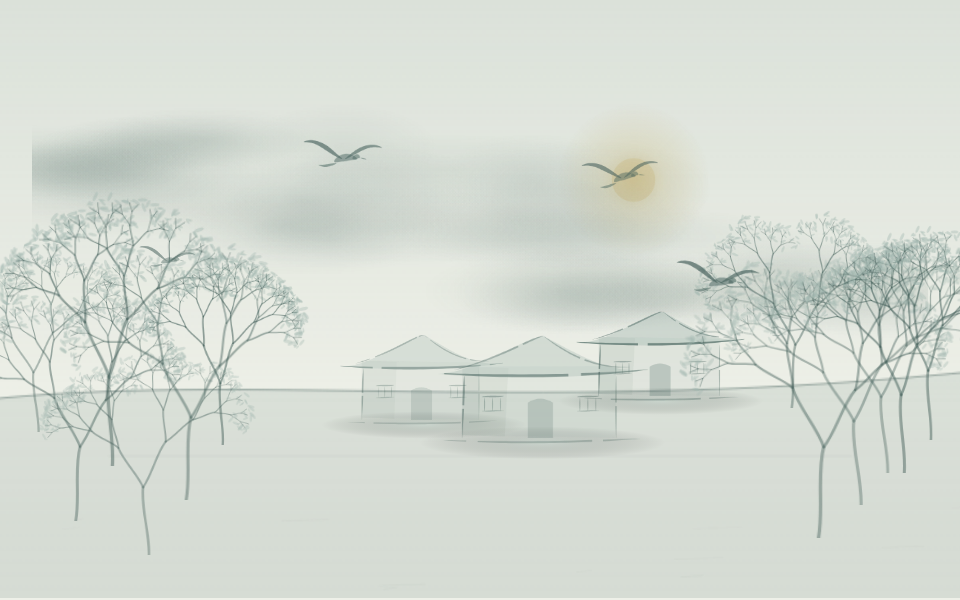
当前严格场景模式记录与自动检查
首轮 2026-10-21T15-04-20-402Z-40bacaa4；当前 2026-10-21T15-04-20-402Z-40bacaa4。
{"village":true,"sky":true}
仍未绘制：
仍需改进：落日残霞的冷暖和秋色尚未自动完成；目前是基础构图，不是完整暮景。
审美仍待逐幅确认；首轮失败未被后续结果覆盖。
g09 · 泉声咽危石，日色冷青松。
王维《过香积寺》 · 原句出处 · 带入生成器
检验泉声到泉水的声明借形，以及石、松的山溪空间。
首轮问题：泉声被当成不可画的抽象项，日色却被直接画成日体。
本轮处理：明确泉声借泉水形；日色用局部光色，松、石、水组成山溪。
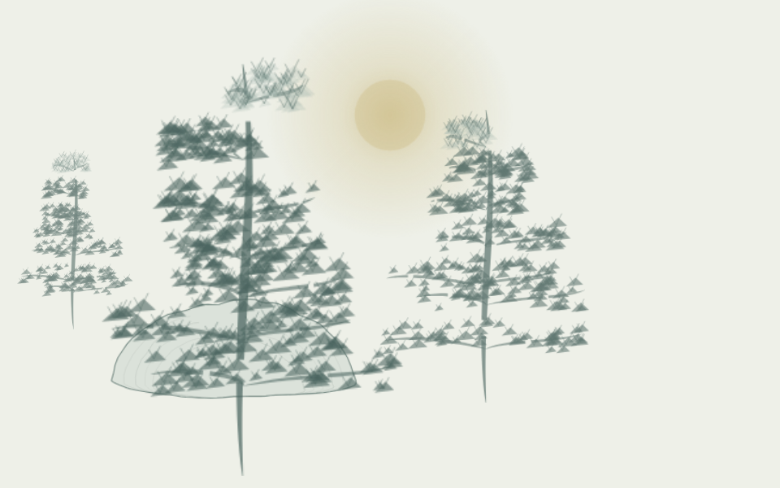
首轮实际结果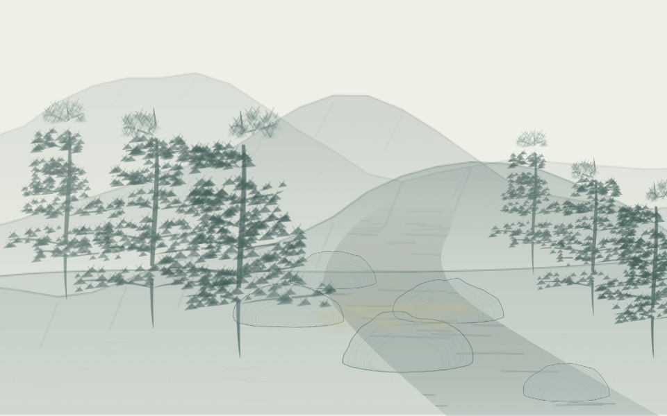
当前严格场景模式记录与自动检查
首轮 2026-10-21T15-04-31-631Z-149062aa；当前 2026-10-21T15-04-31-631Z-149062aa。
{"spring":true,"stream":true,"noInventedSun":true}
仍未绘制：
仍需改进：借泉水不代表原文明确看见水；冷的色温和泉声本身仍未表达。
审美仍待逐幅确认；首轮失败未被后续结果覆盖。
g10 · 山际见来烟，竹中窥落日。
吴均《山中杂诗》 · 原句出处 · 带入生成器
检验山际烟与竹间落日的远近，避免日体悬在原默认高处。
首轮问题：山际、来烟没有画法，落日与竹丛之间未形成空间。
本轮处理：恢复山势、薄烟；日体降到竹丛区域，靠前竹叶与后方山烟分层。
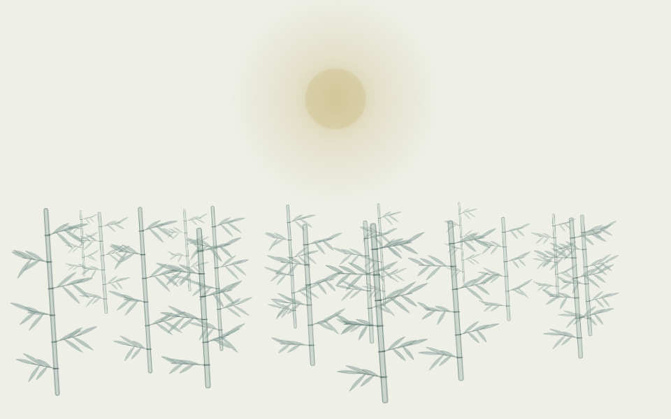
首轮实际结果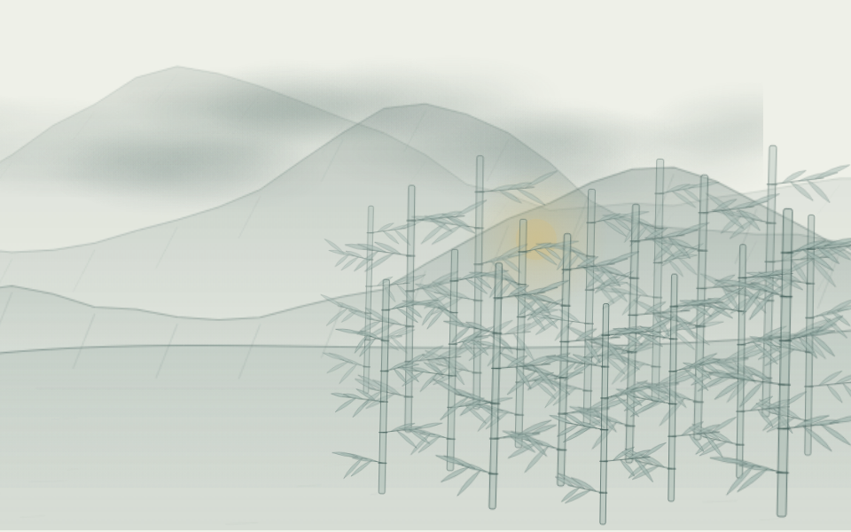
当前严格场景模式记录与自动检查
首轮 2026-10-21T15-04-38-719Z-ebde6433；当前 2026-10-21T15-04-38-719Z-ebde6433。
{"mountain":true,"mist":true,"bambooHillside":true}
仍未绘制：
仍需改进：山际烟沿用薄雾色层；准确遮蔽和日落过程仍未实现。
审美仍待逐幅确认；首轮失败未被后续结果覆盖。
g11 · 一水护田将绿绕，两山排闼送青来。
王安石《书湖阴先生壁·其一》 · 原句出处 · 带入生成器
检验田、水相绕和两山的数量；排闼不应变成人物推门。
首轮问题：首轮把不确定的闼用于确定空间关系，被检查拦截。
本轮处理：修订回答保持门的不确定性并删去不可靠关系；两山画为两个山体单元，田水分区。
首轮实际结果：未生成画面spatial[1] 确定的空间关系不能使用缺席或比喻参照主体
当前严格场景模式记录与自动检查
首轮 2026-10-21T15-04-43-055Z-aed3ed8c；当前 2026-10-21T15-07-53-830Z-dabcb453。
{"field":true,"water":true,"twoPeaks":true,"noPerson":true}
仍未绘制：绿：该专名人物、地名或抽象含义暂不作实景补画；闼：出现情况不确定，暂不补画；青：该专名人物、地名或抽象含义暂不作实景补画
仍需改进：绕田主要来自本地布局，修订回答未给空间项；送青的拟人意味及门的形态仍未绘制。
审美仍待逐幅确认；首轮失败未被后续结果覆盖。
g12 · 白鸟一双临水立，见人惊起入芦花。
戴复古《江村晚眺》 · 原句出处 · 带入生成器
检验一双白鸟的计数与水岸位置；站立到惊起的时序单独标注。
首轮问题：两次严格场景输出的关系证据都未包含鸟名，原失败保留。
本轮处理：另做一次真实数量模式对照，得到两只鸟与芦花；原生芦穗作为草工具变体，组织到水岸。
首轮实际结果：未生成画面spatial[1] 依据未关联关系两端
当前严格场景模式：未生成画面spatial[1] 依据未关联关系两端
数量模式对照，未提取空间关系
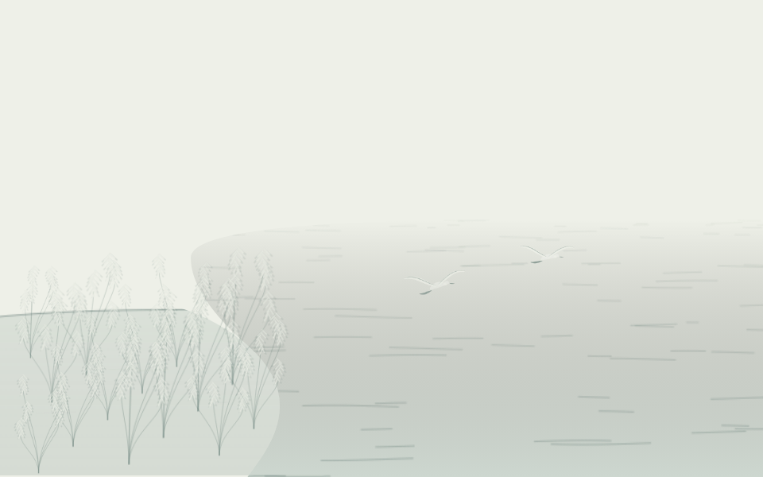
独立的 3.1 模式真实调用；不计作 3.2 成功记录与自动检查
首轮 2026-10-21T15-04-47-576Z-7b92d9f3；当前 2026-10-21T15-07-57-898Z-84685e24。数量对照 2026-10-21T15-17-05-559Z-bbcaedbb。
{}
仍未绘制：人：出现情况不确定，暂不补画
仍需改进：严格 3.2 仍失败；3.1 对照不算空间模式成功。从站到飞的时序、人物在场解释仍需处理。
审美仍待逐幅确认；首轮失败未被后续结果覆盖。